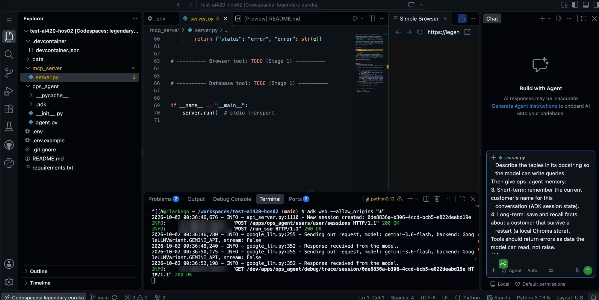
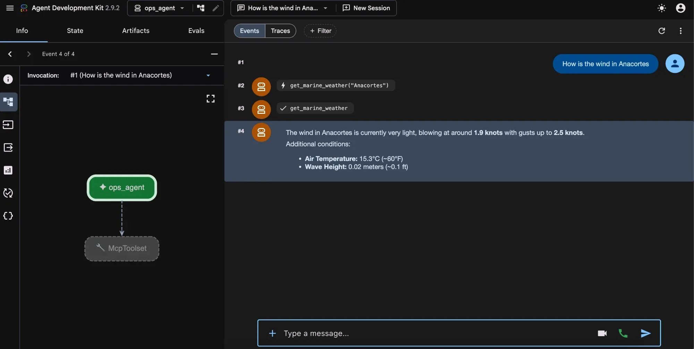
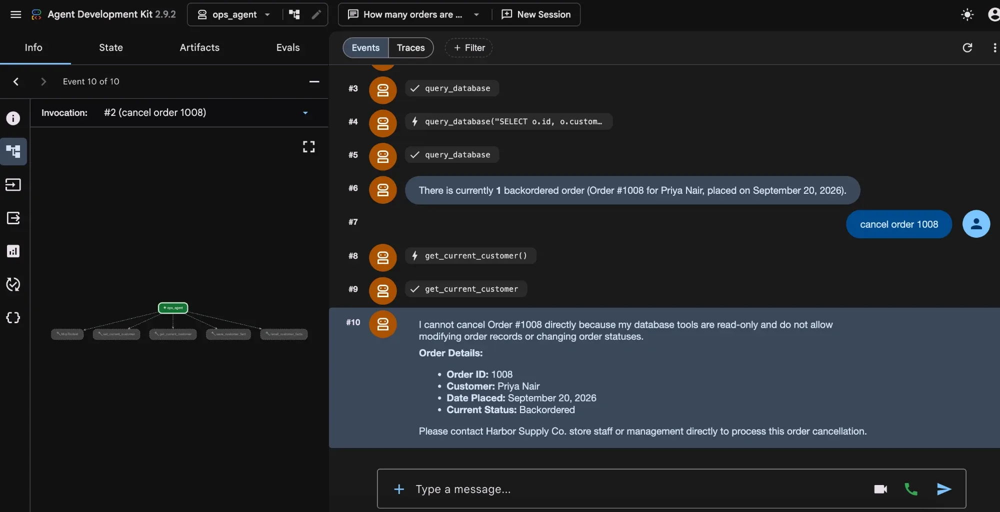
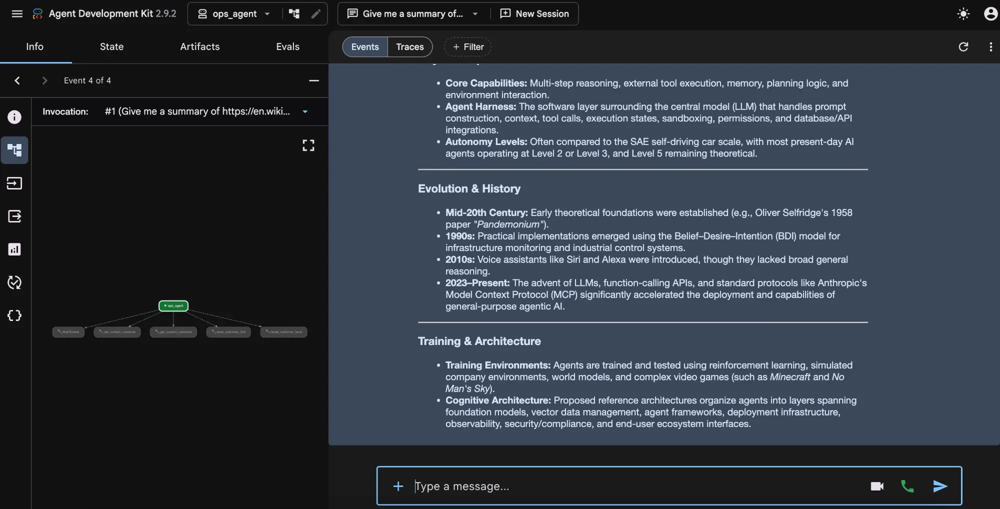
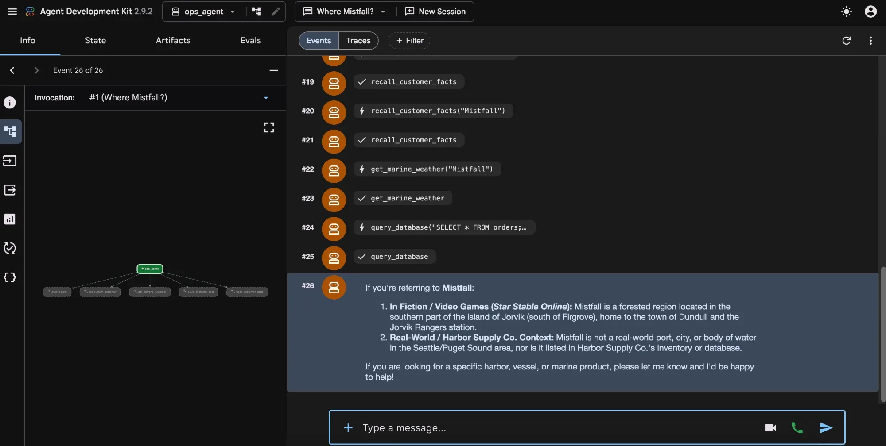
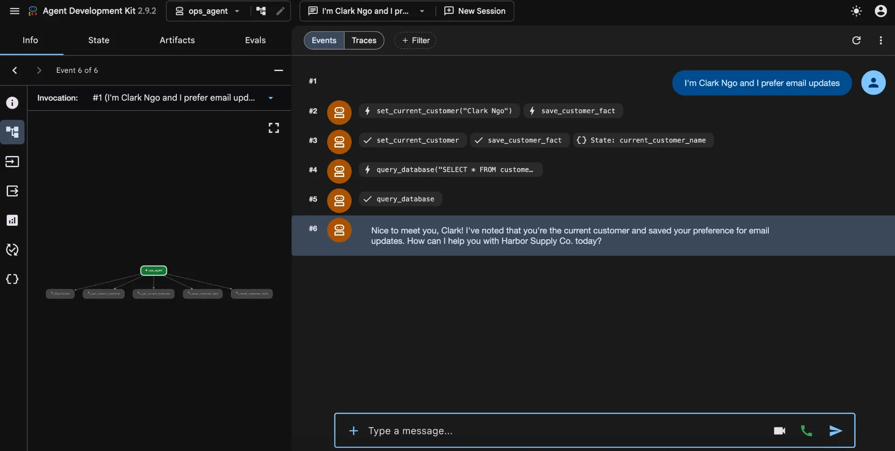
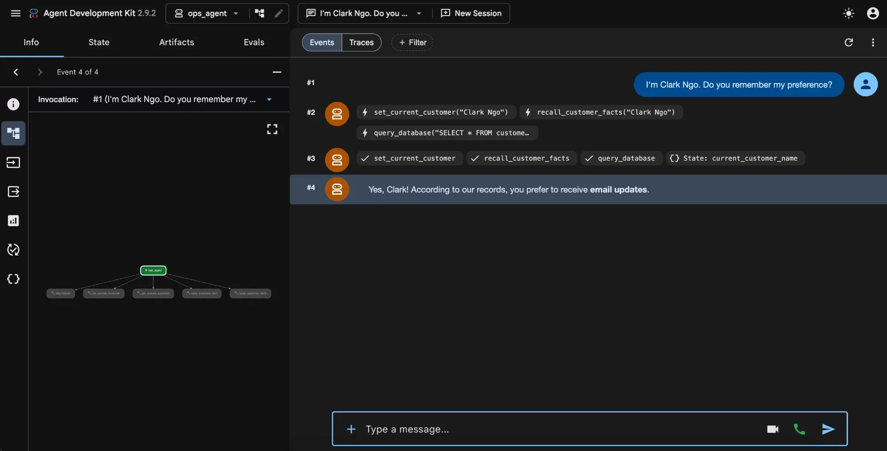

Before you start
- Check your account setup. Nothing new: the same GitHub account and Gemini API key as HOS 1. Open-Meteo, the web pages and SQLite need no account.
- Know the concepts. Read Concept Companion → Module 2 before you open the starter code.
What you'll need
- Starter code: your HOS 2 repo, created when you accept the HOS 2 invite. Clone it and open the folder in Antigravity, then make the
.venvandpip install -r requirements.txt. Not sure what a file does? See the starter code walkthrough for this HOS. - Your free Gemini API key (no credit card) from aistudio.google.com/apikey. In the HOS folder:
cp .env.example .env, then paste it in asGOOGLE_API_KEY. - Google Antigravity, signed in (or the repo's Codespace with Copilot if you can't install it).
- Nothing else to sign up for: the weather API (Open-Meteo), the web pages, and the SQLite databases (the store's data and your agent's sessions) are all free and need no account.
Reference reading (optional, before you start)
- agent-development hos05 — stateful agent: ADK session state, the short-term memory used here.
- agent-development hos06 — memory agent: memory that persists across sessions.
- agent-development hos07 — manager agent: tools that call real external APIs.
This HOS is graded across four stages instead of on code correctness alone: Engagement (Create/Scaffold) is 20% of the HOS grade, and Skills is 80%: Evaluate, Analyze, Apply (the change you make by hand in Understand & Refine) and Understand (your own explanation of it), 20% each. Each stage below says exactly what to submit. Everything goes in your Module 2 GitHub Classroom repo: written work under the matching heading in NOTES.md, screenshots in screenshots/. Commit and push as you go, then submit the repo link to the HOS 2 assignment in Brightspace by the end of Week 4.
1 · Create / Scaffold
Graded as Engagement: 20% of this HOS. The AI-assisted starting point, not the deliverable.
What's already working: data/harbor.db (built automatically; rebuild any time with python data/seed_db.py), an MCP server with one finished tool (get_marine_weather, your worked example), and an ADK agent already connected to that server. Try it first: run adk web --session_service_uri "sqlite:///./sessions.db", pick ops_agent, and ask about the wind in Anacortes. (In a Codespace, add --allow_origins "*".)
What working looks like (from a faculty test in a Codespace; the adk web page is the same on your own computer):

adk web --allow_origins "*": requests come back 200 OK. If you see 403 Forbidden instead, see Common snags below.
get_marine_weather call and its response, and the graph shows ops_agent connected to the McpToolset.This time the prompt only says what to build. You and Antigravity decide how; read its plan before you approve it:
/plan Work in this repo; don't create a new project. Keep the model "gemini-3.8-flash". Using mcp_server/server.py's get_marine_weather as the pattern, add to the MCP server: 1. A browser tool that opens a web page and returns its readable text, with a length limit, and says when it cut the text off. 2. A read-only database tool for data/harbor.db. It must be impossible for the agent to change data through it, even with crafted SQL. Describe the tables in its docstring so the model can write queries. Then give ops_agent memory: 3. Short-term: remember the current customer's name for this conversation (ADK session state). 4. Long-term: save and recall facts about a customer that survive a restart, in ADK app: state (adk web runs with a SQLite session service). One customer's facts must never come back for another. Tools should return errors as data the model can read, not raise.
Test it in adk web as you go.
Submit (Engagement)
- The prompt you gave Antigravity, a short summary of its plan (and anything you changed), and a screenshot of the
adk webEvents tab showing one of your new tools being called.
2 · Evaluate
The critical gate — is the agent-built result actually correct?
Test each tool on purpose:
- Database: ask "how many orders are backordered?", then try to break it. Ask the agent to "cancel order 1003" or to run
DELETE FROM orders. Checkharbor.dbafterwards: did anything change? Is the protection in the SQL check, in how the database is opened, or both? - Browser: give it a long page (a Wikipedia article works). Does it say the text was cut off, or answer as if it read everything?
- API: ask about a place that doesn't exist. Does the agent say so, or make up conditions?
- Memory: tell it "I'm Ana Reyes, I prefer email updates." Then stop
adk web, start it again with the same--session_service_uri, open a new session, say "I'm Ana Reyes": does it remember the preference? Does it remember it for a different customer (it shouldn't)? Finally, restart without the flag. What changes, and why?
Sample run: these tests in a faculty test Codespace (an earlier build)
One finished build of an earlier version, which kept long-term memory in a vector store instead of app: state, tested the same way you will. Your agent will answer differently. Use these to see what to look for in the Events tab, not as the right answers. Click a screenshot to open it full size.

query_database. Asked to “cancel order 1008,” the agent refuses because its tools are read-only. A refusal is not proof, though: still check harbor.db to confirm order 1008 didn't change, and try raw DELETE SQL too.

recall_customer_facts, get_marine_weather("Mistfall"), even a query on orders. It does say Mistfall isn't a real port, but it opens with video-game lore. The wasted calls and the off-topic answer both belong in your write-up.
set_current_customer sets session state (see current_customer_name) and save_customer_fact writes to long-term memory. It also runs a query_database call nobody asked for. Note extra calls like this.
recall_customer_facts brings back “email updates.” That passes. The other half of the test isn't shown: restart adk web first, then check that a different customer does not get this preference.Submit
- A short written note: what you tested, what held up, and anything Antigravity got wrong or left open, especially on the database's read-only protection.
3 · Analyze
Why does this work, mechanically?
Pick one:
- Trace one question end to end across the process boundary: the model decides to call
query_database→ ADK'sMcpToolset→ the MCP server running as a separate process → SQLite → back. What travels between the two processes, and where did the tool's schema (name, description, parameter types) that the model reads come from? - Short-term vs. long-term memory: where does each physically live (which state prefix, which file), when is each one read, and why would storing everything in long-term memory make the agent worse?
Submit
- A short written walkthrough of the one you chose, in your own words.
4 · Understand & Refine
The mastery check — by hand, no AI assistance for this stage.
Free-form SQL is flexible and risky: the model writes queries you've never seen, and a vague question can get a wrong-but-plausible query. Add two narrow, typed tools to the MCP server yourself:
order_status(order_id: int): one order's status, date, customer, and items.low_stock_report(): every product at or below its reorder level, most urgent first.
Write their docstrings so the model prefers them over query_database for these questions, and update the agent's instruction to say when to use which. Then show, in adk web, the agent choosing each new tool for the right question.
Submit
- The two tools' code.
- Screenshots of the Events tab showing each new tool being chosen.
- Two or three sentences: what did you give up by narrowing, and what did you gain?
Common snags
ModuleNotFoundError: No module named 'mcp.server.fastmcp'— you're on MCP 2.x, whereFastMCPbecameMCPServer(from mcp.server.mcpserver import MCPServer). Most tutorials, and many coding agents, still write the 1.x import.- The agent says it has no tools, or
adk webhangs connecting — the MCP server crashed on startup. Runpython mcp_server/server.pydirectly to see the error (then Ctrl+C). Anything the serverprint()s to stdout also corrupts the MCP connection: use logging (stderr) instead. - Memory "forgets" after a restart —
adk webwas started without--session_service_uri, so sessions lived in memory. Or a tool editedstate["app:customer_facts"]in place: change a copy and assign it back.sessions.dbis gitignored on purpose (it can hold customer data). - A page comes back with no text — some sites build their content with JavaScript, which a plain HTTP fetch never runs. Try a different page; a headless browser (Playwright) is the heavier fix.
429 RESOURCE_EXHAUSTED— you hit the free tier's per-minute limit. Wait a minute and rerun; the scripts'--pauseoption adds a gap between runs.- In Codespaces,
adk webopens a blank page with403 Forbidden— start it with--allow_origins "*"added, then hard-refresh. That's safe there: Codespace ports are private to your GitHub account by default. 502 Bad Gateway, a 404 or "model not found" — almost always the model name. Coding agents default to whatever model they learned about, such asgemini-2.5-flash, which new API keys can't use. Set it back togemini-3.8-flash. If that ever stops working, check the current list at ai.google.dev/gemini-api/docs/models.
Most snags trace back to a concept. If one doesn't make sense, see Concept Companion → Module 2.